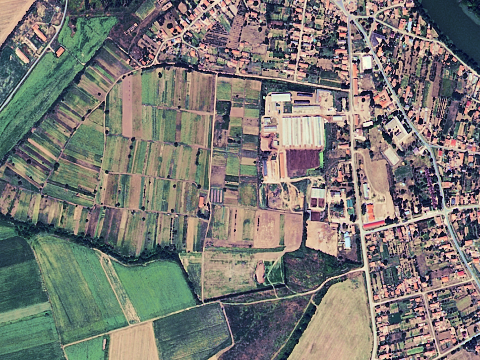
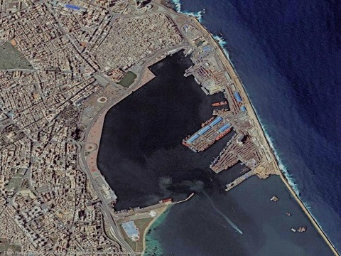
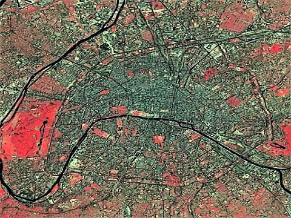

|
Devikalyan Das
Graduate Student, UdS
|
devikalyandas9067@gmail.com
CV |
Google Scholar |
Github |
|
I am a Masters student at Universität des Saarlandes in the department of Visual Computing. Before coming here, I was a Research Fellow at National Institute of Technology, Surathkal, India, where I worked with Dr. Shyam Lal on designing Automated Cancer Detection System using efficient Deep Learning algorithms.
I am insterested in the applications of Machine Learning in Image Processing & Computer Vision.
Previously, I was a software engineer at Tech Mahindra mainly involved in data analysis and visualization.
I completed my Bachelors in Electronics & Telecommunications from VSSUT Burla.
Lastly, I am always an advocate of open-source research. Apart from academia, I like reading books, running, and travelling.
|
 |
NucleiSegNet: Robust deep learning architecture for the nuclei
segmentation of liver cancer histopathology images
Shyam Lal, Devikalyan Das, Kumar Alabhya, Anirudh Kanfade,
Aman Kumar, Jyoti Kini
Journal of Computers in Biology and Medicine, 2021
bibtex |
code
@article{LAL2021104075,
author = {Shyam Lal, Devikalyan Das, Kumar Alabhya,
Anirudh Kanfade, Aman Kumar, Jyoti Kini},
title = {NucleiSegNet: Robust deep learning architecture
for the nuclei segmentation of liver cancer
histopathology images},
journal = {Computers in Biology and Medicine},
volume = {128},
pages = {104075},
year = {2021},
issn = {0010-4825},
doi = {https://doi.org/10.1016/j.compbiomed.2020.104075}
}
|
 |
A robust framework for quality enhancement of aerial
remote sensing images
Eerapu Karuna Kumari,Devikalyan Das, Shilpa Suresh,
Shyam Lal, AV Narasimhadhan
Journal of Infrared Physics & Technology, 2018
pdf |
bibtex
@article{KARUNAKUMARI2018362,
author = {Eerapu {Karuna Kumari}, Devikalyan Das,
Shilpa Suresh, Shyam Lal, A.V. Narasimhadhan},
title = {A robust framework for quality enhancement
of aerial remote sensing images},
journal = {Infrared Physics & Technology},
volume = {93},
pages = {362-374},
year = {2018},
issn = {1350-4495},
doi = {https://doi.org/10.1016/j.infrared.2018.08.014}
}
|
 |
Image quality restoration framework for contrast enhancement of
satellite remote sensing images
Shilpa Suresh, Devikalyan Das, Shyam Lal, Deep Gupta
Journal of Remote Sensing Applications: Society and
Environment, 2018
pdf |
bibtex
@article{SURESH2018104,
author = {Shilpa Suresh and Devikalyan Das
and Shyam Lal and Deep Gupta},
title = {Image quality restoration framework for
contrast enhancement of satellite remote
sensing images},
journal = {Remote Sensing Applications: Society
and Environment},
volume = {10},
pages = {104-119},
year = {2018},
issn = {2352-9385},
doi = {https://doi.org/10.1016/j.rsase.2018.03.008}
}
|
 |
A Framework for Quality Enhancement of Multispectral
Remote Sensing Images
Shilpa Suresh, Devikalyan Das, Shyam Lal,
Ninth International Conference on Advanced Computing
(ICoAC), 2017
pdf |
bibtex
@INPROCEEDINGS{8441181,
author={S. Suresh, D. Das, S. Lal},
booktitle={2017 Ninth International Conference
on Advanced Computing (ICoAC)},
title={A Framework for Quality Enhancement
of Multispectral Remote Sensing Images},
year={2017},
pages={9-14},
doi={10.1109/ICoAC.2017.8441181}
}
|
|
{kind=link}